The radar equation ties together everything a system does: how power spreads, how a target reflects it, and how much of that echo finds its way back to the receiver. This chapter builds the equation from first principles, starting with free-space path loss and ending with the classic form that predicts maximum range.
In telecommunication, free-space path loss (FSPL) is the loss in signal strength of an electromagnetic wave that would result from a line-of-sight path through free space, with no obstacles nearby to cause reflection or diffraction. The FSPL appears in vacuum under ideal conditions, for example, a radio communication between satellites. It is a criterion for the derivation of the radar equation too.
If high-frequency energy is emitted by an isotropic radiator, then the energy propagates uniformly in all directions. Areas with the same power density therefore form spheres (A = 4πR²) around the radiator. The same amount of energy spreads out on an incremented spherical surface at an incremented spherical radius. That means: the power density on the surface of a sphere is inversely proportional to the surface area A (or the square of the radius R) of the sphere.
The expression for FSPL actually encapsulates two effects. Free-space power loss is proportional to the square of the distance between the transmitter and receiver, and also proportional to the square of the frequency of the radio signal. Firstly, the spreading out of electromagnetic energy in free space is determined by the inverse square law, for example:
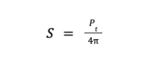
Where:
The second effect is that of the receiving antenna's aperture, which describes how well an antenna can pick up power from an incoming electromagnetic wave. For an isotropic antenna, this is given by:
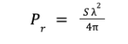
Where:
The total loss is given by the ratio:
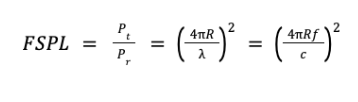
Where:
This can be found by combining the previous two expressions.
We all know the sun radiates energy in all directions. The energy radiated from the sun measured at any fixed distance and from any angle will be approximately the same. Assume that a measuring device is moved around the sun and stopped at the points indicated in the figure to make a measurement of the amounts of radiation. At any point around the circle, the distance from the measuring device to the sun is the same. The measured radiation will also be the same. The sun is therefore considered an isotropic radiator.
In antenna design, the isotropic radiator is a hypothetical antenna. In reality, this antenna cannot exist. But it is used to compare real antennas with each other. It is a hypothetical reference. All real antennas have a gain that is compared to this reference. This gain is a measure of the directivity of a given antenna.
The radar range equation represents the physical dependencies of the transmit power, the wave propagation, and the receiving of the echo signals. The power Pe returning to the receiving antenna is given by the radar equation, depending on the transmitted power Ps, the slant range R, and the reflecting characteristics of the target (described as the radar cross section σ). At the known sensitivity of the radar receiver, the radar equation determines the theoretically maximum range achieved by a given radar. Furthermore, one can assess the performance of the radar set with the radar range equation (or, more briefly, the radar equation).
First, we assume that electromagnetic waves propagate under ideal conditions, that is, without dispersion.
Free-space power loss is proportional to the square of the distance between the transmitter and receiver, and also proportional to the square of the frequency of the radio signal.
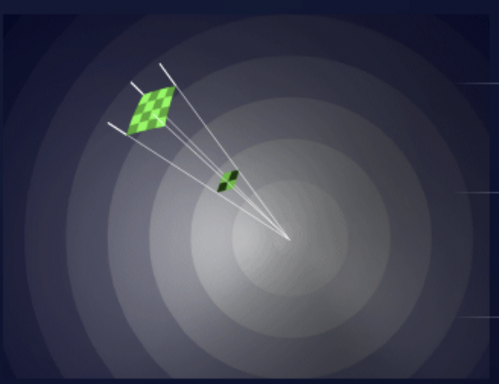
If high-frequency energy is emitted by an isotropic radiator, then the energy propagates uniformly in all directions. Areas with the same power density therefore form spheres (A = 4πR²) around the radiator. The same amount of energy spreads out on an incremented spherical surface at an incremented spherical radius. That means: the power density on the surface of a sphere is inversely proportional to the square of the radius of the sphere.
So we get the equation to calculate the nondirectional power density:
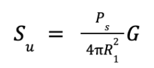
Where:
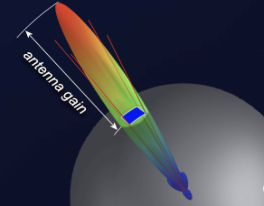
Since a spherical segment emits equal radiation in all directions at constant transmit power, if the radiated power is redistributed to provide more radiation in one direction, then this results in an increase of the power density in the direction of the radiation. This effect is called antenna gain. This gain is obtained by directional radiation of the power. So, from the definition, the directional power density is:
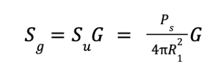
Where:
Of course, in reality, radar antennas are not partially radiating isotropic radiators. Radar antennas must have a small beamwidth and an antenna gain up to 30 or 40 dB (for example, a parabolic dish antenna or phased array antenna).
The target detection is not only dependent on the power density at the target position, but also on how much power is reflected in the direction of the radar. In order to determine the useful reflected power, it is necessary to know the radar cross section σ. This quantity depends on several factors. But it is true to say that a bigger area reflects more power than a smaller area. That means: an Airbus offers more radar cross section than a sporting aircraft in the same flight situation. Beyond this, the reflecting area depends on the design, surface composition, and materials used.
If the previously mentioned is summarized, the reflected power Pr (at the target) results from the power density Su, the antenna gain G, and the very variable reflection area σ:
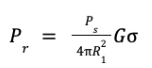
Where:
Simplified, a target can be regarded as a radiator in turn due to the reflected power. In this case, the reflected power Pr is the emitted power.
Since the echoes encounter the same conditions as the transmitted power, the power density yielded at the receiver Se is given by:
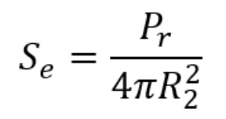
Where:
At the radar antenna, the received power Pe is dependent on the power density at the receiving site Se and the effective antenna aperture Aw:
Pe = Se · Aw
Where:
The effective antenna aperture arises from the fact that an antenna suffers from losses; therefore, the received power at the antenna is not equal to the input power. As a rule, the efficiency of the antenna is around 0.6 to 0.7 (efficiency Ka).
Applied to the geometric antenna area, the effective antenna aperture is:
Aw = A · Ka
Where:
The power received, Pe, is then calculated:
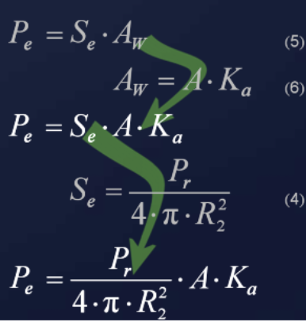
The transmitted and reflected waves have been treated separately. The next step is to consider both transmitted and reflected power. Since R2 (target to antenna) is equal to the distance R1 (antenna to target), then:
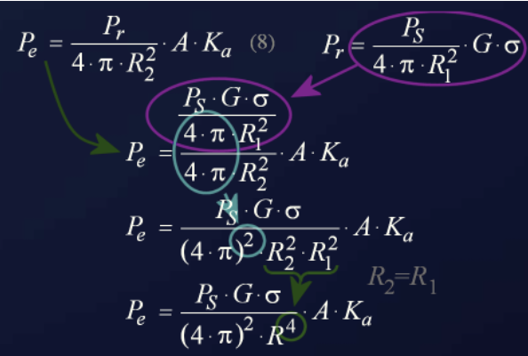
Another equation, which will not be derived here, describes the antenna gain G in terms of the wavelength λ:
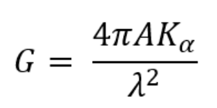
Solving for A, the antenna area, and substituting back, after simplification it yields:
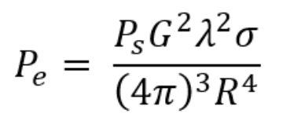
Solving for range R, we obtain the classic radar equation:
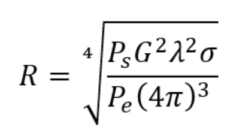
All quantities that influence the wave propagation of radar signals were taken into account in this equation. Before we attempt to use the radar equation in practice, for example to determine the efficiency of radar sets, some further considerations are necessary.
For given radar equipment, most quantities (Ps, G, λ) can be regarded as constant since they are only variable in very small ranges. The radar cross section, on the other hand, varies heavily, but for practical purposes we will assume 1 m².
The smallest received power that can be detected by the radar is called PE min. Powers smaller than PE min are not usable since they are lost in the noise of the receiver. The minimum power is detected at the maximum range Rmax, as seen from the equation:
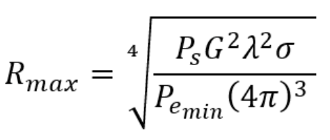
An application of this radar equation is to easily visualize how the performance of the radar set influences the achieved range.
All considerations when calculating the radar equation were made assuming that the electromagnetic waves propagate under ideal conditions without disturbing influences. In practice, a number of losses should be considered since they reduce the effectiveness of the radar considerably.
First, the radar equation is extended by including the loss factor Lges. This factor includes the following losses:
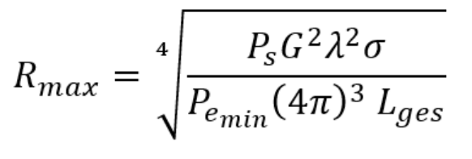
High-frequency components, such as waveguides, filters, and a radome, generate internal losses. For a given radar set this loss is relatively constant and also easily measured. Atmospheric attenuation and reflections at the earth's surface are permanent influences.
An extended but less frequently used form of the radar equation considers additional terms, like the earth's surface, but does not classify receiver sensitivity and atmospheric absorption.
In this equation, in addition to the already well-known quantities, are:
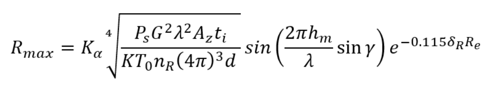
The trigonometric representation shows the influence of the earth's surface. The earth plane surrounding a radar antenna has a significant impact on the vertical polar diagram.
The combination of the direct and re-reflected ground echo changes the transmitting and receiving patterns of the antenna. This is substantial in the VHF range and decreases with increasing frequency. For the detection of targets at low heights, a reflection at the earth's surface is necessary. This is possible only if the ripples of the area within the first Fresnel zone do not exceed the value 0.001 R (within a radius of 1,000 m, no obstacle may be larger than 1 m).
Specialized radar at lower (VHF) frequency bands make use of the reflections at the earth's surface and lobing to maximize cover at low levels. At higher frequencies, these reflections are more disturbing. The following picture shows the lobe structure caused by ground reflections. Normally this is highly undesirable, as it introduces intermittent cover as aircraft fly through the lobes. The technique has been used in ATC ground-mounted radar to extend the range, but it is only successful at low frequencies where the broad lobe structure permits adequate cover at higher elevations.
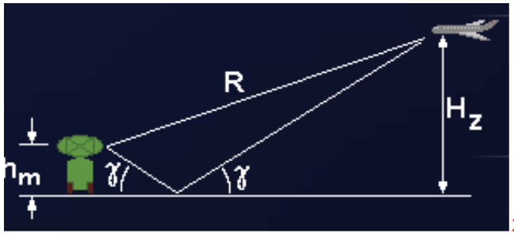
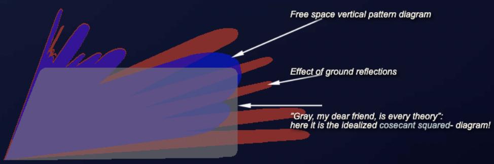
Increasing the height of the antenna has the effect of making the lobing pattern sharper. A fine-grained lobing structure is often filled in by irregularities in the ground plane. Specifically, if the ground plane deviates from a flat surface, then the reinforcement and destruction pattern resulting from the ground reflections breaks down. Avoidance of lobe effects is one of the prime considerations when selecting radar location and the height of the antenna.
The radar cross section σ (RCS) is an aircraft-specific quantity that depends on many factors. The computational determination of RCS is only possible for simple bodies. The RCS of simple geometric bodies depends on the ratio of the structural dimensions of the body to the wavelength.
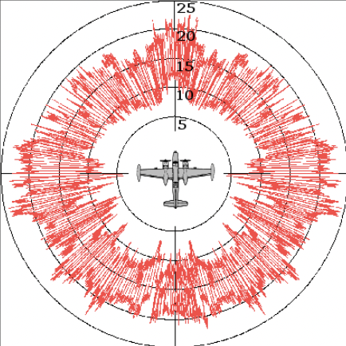
Practically, the RCS of a target depends on:
Whereas in the design of passenger airplanes more attention is paid to effectiveness and safety, in the case of an aircraft used for military purposes, care is taken to ensure that this reflective surface is as small as possible. Measures to achieve this are referred to as stealth technology.
The RCS of any reflector can be seen as a ratio to an idealized reference reflector. The projected area of an equivalent isotropic reflector (reflecting equally in all directions) has an RCS of exactly one square meter. In practice, this is only performed by a spherical reflector with an ideally conducting surface. From a large distance, you cannot see the spherical shape; you can only see a circular area, the so-called projection, both with the same diameter. The diameter of this sphere must be approximately 1.128 m to be the size of one square meter. Such an equivalent isotropic reflector delivers the same power per unit measure of solid angle back to the radar, regardless of the aspect angle.
Isotropic reflection does not mean that this sphere would distribute the power arriving from one direction equally in all directions. The shape and size of the distribution are different, but always the same relative to the aspect angle of the illuminating radar, regardless of the angle from which the radar illuminates this sphere. However, the reference reflector can re-radiate only the power it has received:
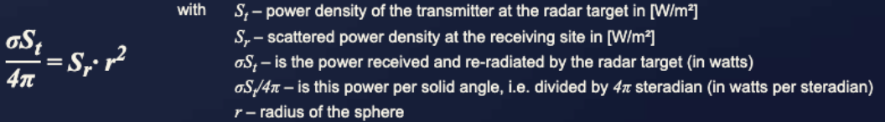
This equation expresses a power balance: only the power arriving at this reflecting object can be reflected, and this power is radiated in many directions. From this power, however, the radar can only receive a small fraction. This fraction depends on the effective antenna area, known as the antenna aperture.
Since the power density generated by the radar transmitter and arriving at the reflection point is put into a ratio with the reflected power density arriving at the radar, all other influences, such as free-space attenuation and distance to the radar, are eliminated. It is assumed that for a monostatic radar, the propagation conditions are the same on the outbound and return paths.
Let Sr be the power density at the receiving point of the radar, which we now see from the perspective of the reflecting object. This power density has the unit of watts per unit area: W/m². The receiving antenna of the radar has only one effective antenna aperture Ar (this is an area and a part of the surface of a sphere). The received power of the radar antenna is then Sr · Ar, which is the power density at the antenna multiplied by its effective aperture.
However, this antenna can receive only a very small portion of the power reflected from the object in all directions, because it occupies only a small part of the surface of the sphere. This area is proportional to the solid angle Ω occupied by the total reflected power distributed on a spherical surface:
Ω = Ar / r²
Thus, a power density (power per solid angle) of Sr · Ar / Ω arrives at the receiving antenna. The solid angle can be replaced with the expression from the equation above and leads to:
Sr · Ar / Ω = Sr · Ar / (Ar / r²) = Sr · r²
The expression Sr · r² thus stands for the received power per unit solid angle (in watts per steradian) and corresponds to the equation above. This can then be rearranged to the equation used below.
In contrast to the isotropic radiator mentioned in antenna technology, such an isotropic reference reflector can very well be constructed in reality. It would only be very unwieldy because of its dimensions. Since the direction of the radar is known in a measurement setup, a calibrated corner reflector can also be used. As usual in antenna technology, this has a gain G compared to the isotropic reflector, which, however, can be calculated out of the measurement result later.
In the following formula, the radar cross section indicates an effective area that captures the incoming wave and re-radiates it into space. Thus, only a power density caused by the surface of the sphere (4πr²) arrives at the receiving antenna of the radar. The radar cross section σ is defined as:
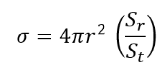
Where:
The following formulas for calculation of the radar cross section are valid under the condition of optical, that is, frequency-independent reflection at bodies that are much further away from the radar than the wavelength and which are much larger than the used wavelength of the radar.
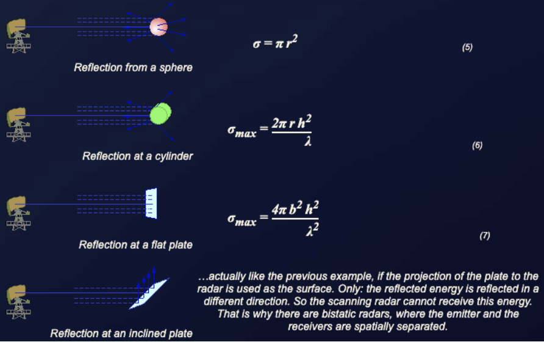
In radar technology, point-like targets are targets whose geometric dimensions are smaller than the pulse volume of the radar set. In contrast to volumetric targets (occurring mainly in weather radar), they do not completely fill the pulse volume. In radar signal processing they occupy one resolution cell (a maximum of two if they are exactly on the boundary).
In reality, the radar cross section is composed of the sum of many small partial powers, which are located at different points of the reflecting object. Depending on the angle from which this object is illuminated, these partial areas have more or less influence; they may be obscured, or their distance to the radar may differ by several multiples of half the wavelength so that they overlap partly constructively and partly destructively. The RCS is thus strongly dependent on the aspect angle and can no longer be easily calculated geometrically. It is usually a result of extensive practical measurements, either on the original or with a model scaled down to the wavelength currently used in the measurement.
Some targets have, according to their geometrical extension, a very large RCS and therefore reflect a rather large amount of the transmitted energy. The table below gives some examples of reflective surfaces in the X-band.
| Target | RCS [m²] | RCS [dB] |
|---|---|---|
| Bird | 0.01 | -20 |
| Man | 1 | 0 |
| Cabin cruiser | 10 | 10 |
| Automobile | 100 | 20 |
| Truck | 200 | 23 |
| Corner reflector | 20379 | 43.1 |
RCS for point-like targets in the X-band.
Five quick questions on the radar equation, graded instantly with your score saved on this device.